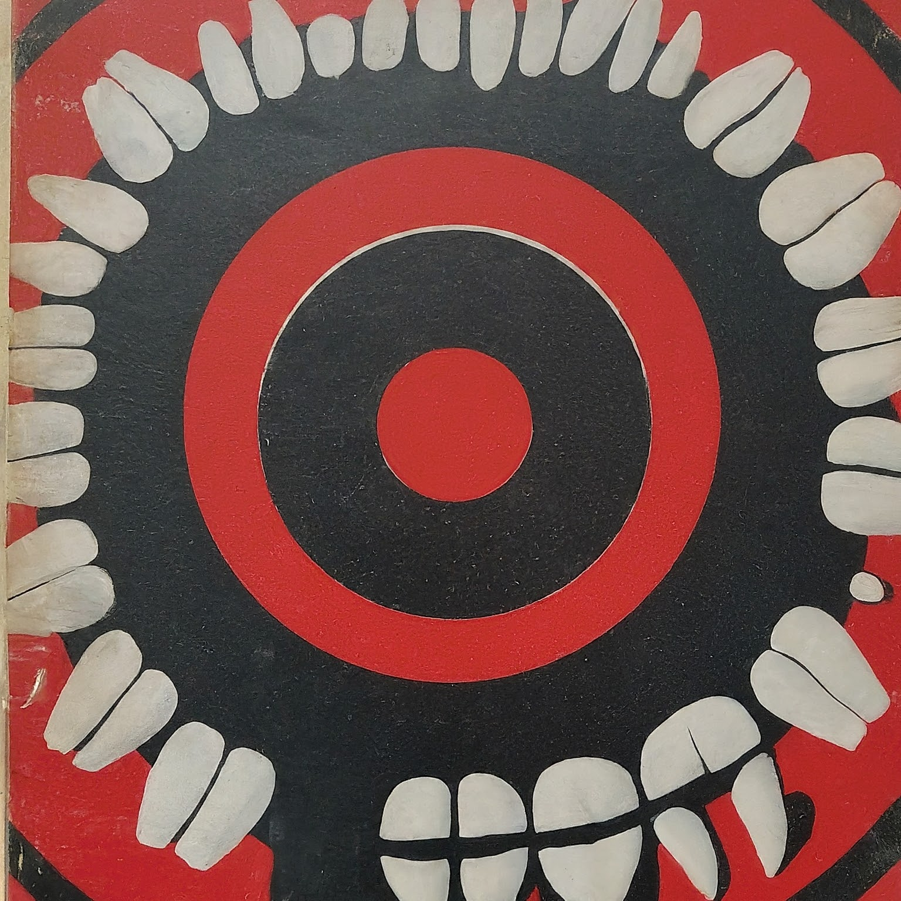

aspect realism
electric meat
aspectualism summary
ontological phenomenalism
ontology / absurdism
the Concept / software
phenomenalism NOT subjective idealism
perspectival phenomenalism
immaterialism
TLP
time as being
logic as tribal OS
infrequently asked questions
wasteland